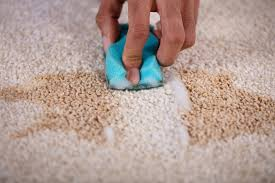
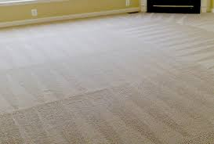

There are two main types of machines you can use to deep-clean your carpets: steam cleaners or carpet shampooers. As the name suggests, a steam cleaner uses steam from hot water to loosen dirt trapped in your carpet or rug. The machine blasts steam through the carpet, vacuums the debris and deposits the dirty water into a tank. Steam cleaners remove and disinfect stains, leaving your carpets fresh and clean. So, With the help of a proprietary hot water extraction cleaning method that leaves no residue we Clean your carpet.
Before gearing up for a carpet cleaning, we make sure to spot-clean any heavy stains with a spot remover. Then vacuum up the residue.
We remove loose dirt and debris from your carpet by thoroughly vacuuming all areas you intend to clean. In order to remove as much dirt as possible, we vacuum slowly and in three different directions.
Once we are satisfied that the vacuum has picked up everything it can, we start your carpet cleaning. We want your carpets to be completely dry before moving furniture back into place or walking on them. So we position an oscillating fan where it can help to circulate air over the carpet or open the windows if the weather allows.
Need a reliable and trustworthy cleaning service to maintain your home's cleanliness on a regular basis? Our long-term house cleaning services provide peace of mind and a comfortable living space.
Phone: (234)-746-6789
Email: tiddyTouch@gmail.com


Experience the convenience of a clean living space every single day! Our cleaning services are tailored to meet your specific needs and ensure that your home is always spotless. Say goodbye to clutter and hello to relaxation as our team of experts keeps your living environment well-maintained on a daily basis. No more worries about taking care of household chores yourself, we're here to handle it all for you! Choose us for a hassle-free, everyday cleaning experience.